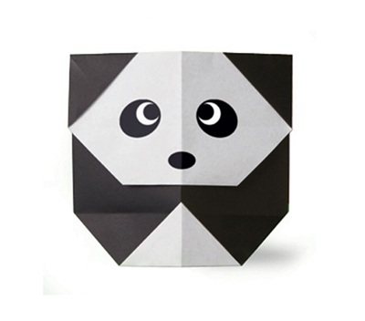

Origami Designs
about us
Follow us

intresting facts about camel
-
Camels store water in their humps.
-
Camels store water in their humps.

intresting facts about chameleon
-
Chameleons blend in with their surroundings.

intresting facts about Pandas
-
pandas eat bamboo.

intresting facts about penguins
-
Penguins cant fly.

intresting facts about flying cicada
-
flying cicadas have red eyes.

intresting facts about teddy bears
-
Margarete Steiff was the first person to make a stuffed bear